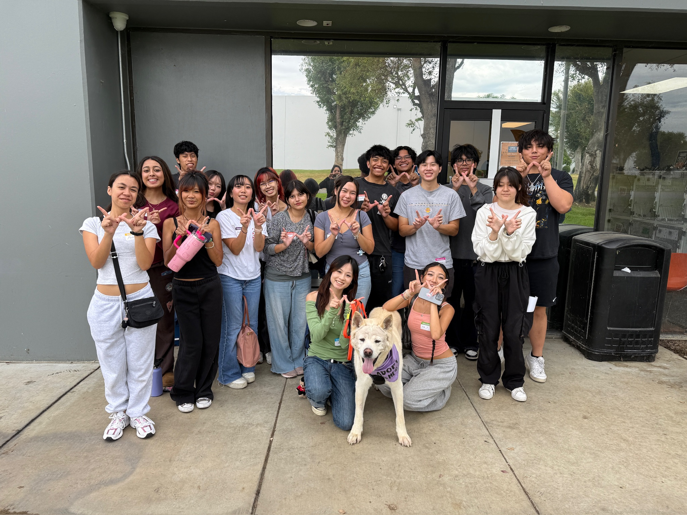
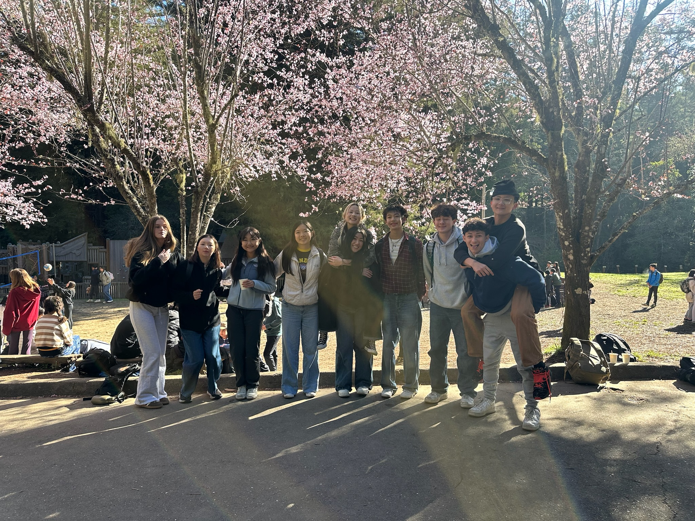
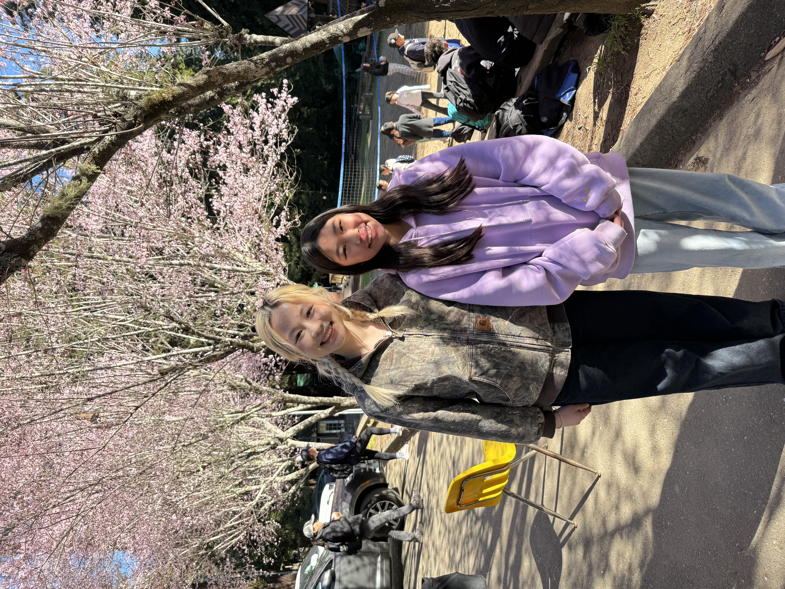

Portfolio




Hi! My name is Lana Nguyen, and I am currently a Business Administration student at the University of California, Riverside. I am interested in learning how businesses operate and how data can be used to make better decisions. Through my education, I hope to develop skills that will help me understand different aspects of business, including management, problem-solving, and analyzing information. I enjoy challenging myself with new experiences and finding opportunities to grow both personally and professionally.
Throughout my life, I have had the opportunity to work in several different environments that have helped me develop important skills. One of my previous jobs was at Paris Baguette, where I gained experience working in a fast-paced environment and interacting with customers. This experience taught me the importance of teamwork, communication, and staying organized while handling multiple responsibilities. I also worked as a receptionist at a nail salon, where I learned how to communicate with customers, manage appointments, and help maintain a welcoming environment. Working at a pho restaurant gave me additional experience in customer service and taught me how important it is to stay patient, responsible, and efficient during busy hours.
Aside from my work experience, I enjoy getting involved in volunteer opportunities and giving back to my community. One of my most memorable experiences was volunteering as a cabin leader, where I was responsible for helping guide and support a group of students. This opportunity helped me become more confident in my leadership abilities and taught me how to be patient, understanding, and dependable. I enjoyed being able to create a positive experience for the students while also learning more about myself as a leader.
At UC Riverside, I have also been involved in volunteering with the WOOF club, which focuses on helping animals and supporting local shelters. Through this organization, I have had opportunities to help with shelter activities and contribute to improving the environments of animals in need. Being involved in WOOF has allowed me to connect with other students who share similar interests while doing something meaningful for the community. I believe volunteering is a great way to meet new people, build relationships, and make a positive impact.
Looking toward the future, I hope to continue gaining experience in different professional environments while building on what I learn in college. Although I am still exploring the different career opportunities available within Business Administration, I am excited to discover where my interests and skills will take me. My experiences in customer service, leadership, and volunteering have taught me the importance of hard work, adaptability, and communication. I hope to carry these lessons with me as I continue my education and work toward my future career goals.
• Assisted customers and provided friendly service.
• Worked with team members in a fast-paced environment.
• Helped maintain a clean and organized workspace.
• Welcomed customers and assisted with appointments.
• Answered questions and helped with daily operations.
• Maintained a friendly and professional environment.
• Provided customer service in a busy restaurant.
• Assisted with daily restaurant operations.
• Worked with coworkers to create a positive dining experience.
• Guided and supported students during camp activities.
• Helped create a safe and welcoming environment.
• Developed leadership, teamwork, and communication skills.
• Participated in volunteer activities supporting local animal shelters.
• Helped maintain clean and comfortable spaces for animals.
• Collaborated with other volunteers to support animal welfare.


